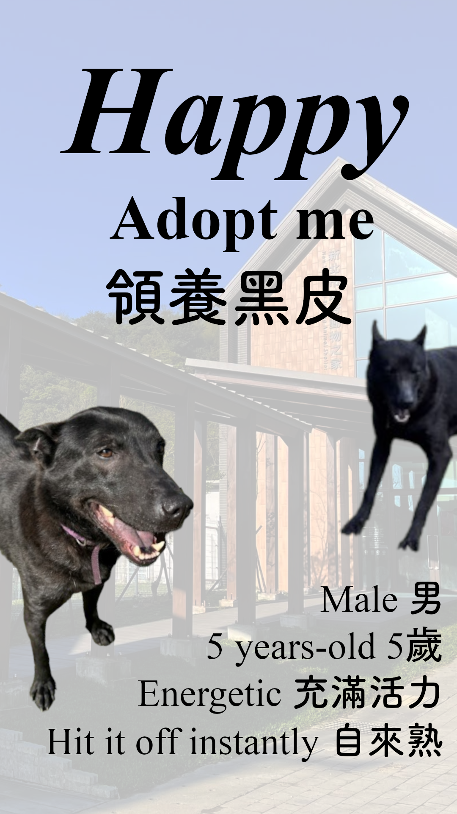

ID: C6
Meet Happy (黑皮) ! 🐶
Happy (黑皮) is a male Mixed-breed dog from Ruifang, showcasing a beautiful blend of a calm yet energetic personality. He entered the shelter framework after being reported for chasing cars on the streets. Originally, field workers planned to release him back to his location after an evaluation; however, recognizing his amiable, gentle nature and love for human touch, they decided to break protocol and permanently admit him to the shelter to secure a better future through adoption.
Campaign Poster 🎨

The Dog Story
An immersive digital media narrative documenting creative tales or documentary insights into daily canine companionship.
Read Story3D Interactive Space
Experience an innovative web space featuring interactive assets and three-dimensional representations designed during the term.
Enter 3D View